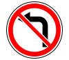
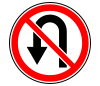
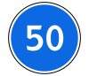
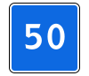
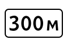
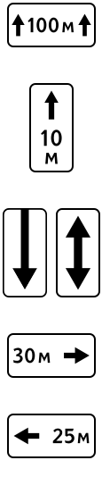

Похожие дорожные знаки: пять сравнений и мини-проверка

Чтобы не путать похожие знаки, сравнивайте не только рисунок, но и действие: что запрещено, что предписано, что рекомендовано и где это начинает действовать. Одинаковая стрелка или число не означают одинаковое требование. Ниже пять сравнений и проверка, которую можно пройти без подсказок.
Это подборка для тренировки различий, а не рейтинг ошибок учеников. Изображения взяты из справочника приложения. Для полного перечня групп используйте общий разбор дорожных знаков; здесь задача уже — научиться замечать признаки, меняющие конкретный ответ.
1. Поворот налево запрещён — разворот запрещён


Знак 3.18.2 запрещает поворот налево, а 3.19 — разворот. Отсутствие запрета одного манёвра не нужно превращать в запрет обоих: сам по себе 3.18.2 не запрещает разворот, а 3.19 не запрещает поворот налево.
При этом возможность манёвра всегда проверяется дальше: полоса, разметка, другие знаки и места, где разворот запрещён пунктом 8.11. Учебная фраза «этот знак не запрещает разворот» не равна разрешению развернуться при любых условиях. В заметке полезно разделить два вопроса: что делает знак и разрешён ли весь манёвр в данной ситуации.
2. Максимальная скорость — минимальная скорость


Красный круг 3.24 задаёт верхний предел. Синий круг 4.6 предписывает движение с указанной или большей скоростью. Чтобы прочитать число, сначала прочитайте форму и группу. Один взгляд на цифру без контура не позволяет понять, с какой стороны находится ограничение.
Знак минимальной скорости не отменяет обязанность выбирать безопасную скорость с учётом условий. Не нужно учить его как команду разогнаться независимо от видимости, препятствия или состояния дороги. Для экзамена различайте содержание знака и совокупность требований в нарисованной обстановке.
3. Минимальная скорость — рекомендуемая скорость

У 4.6 и 6.2 синий фон, но разная форма и смысл. Круг — предписывающий знак минимальной скорости. Квадрат 6.2 сообщает рекомендуемую скорость на участке. Рекомендация не заменяет обязательные ограничения скорости и общие требования безопасности.
Для запоминания составьте короткое описание без числа: «синий круг — нижняя граница, синий квадрат — рекомендация». Затем добавьте число обратно. Это помогает отличать изображения по смыслу, а не заучивать один знакомый вариант значка из билета.
4. Расстояние до объекта — зона действия


Табличка 8.1.1 показывает расстояние до начала опасного участка, места введения ограничения или объекта впереди. Табличка 8.2.1 указывает протяжённость опасного участка или зону действия тех знаков, с которыми применяется. Вопросы разные: «через сколько начнётся?» и «на какую длину распространяется?».
На 8.2.1 есть вертикальные стрелки, помогающие различить таблички. Но запоминать только наличие стрелок недостаточно: рядом могут встретиться другие таблички серии 8.2. Всегда читайте точный вид и основной знак. Не переносите правила одной комбинации на все белые прямоугольники с метрами.
Полезное упражнение: нарисуйте в заметке линию движения и отметьте, какое расстояние измеряет каждая табличка. Это ваша учебная схема, а не дорожный знак. Затем проверьте значение по приложению 1 к ПДД и вернитесь к настоящей задаче.
5. Движение направо — направление для грузовых автомобилей
Круглый 4.1.2 «Движение направо» разрешает движение только направо в пределах его действия, с предусмотренными ПДД исключениями. Прямоугольный 6.15.2 «Направление движения для грузовых автомобилей» показывает рекомендуемое направление для перечисленных в его описании транспортных средств, если в одном из направлений их движение запрещено.
Здесь сходство стрелки особенно обманчиво. Нельзя объявлять обе картинки одинаковой командой «всем направо». Уточняйте форму, наличие символа грузового автомобиля и адресата знака. Проверяйте и другие ограничения: рекомендуемый маршрут не разрешает нарушать запрещающий знак на выбранной дороге.
Мини-проверка без выбора наугад
Сначала ответьте вслух, затем раскройте объяснение. Вопросы ниже редакционные, они проверяют значение отдельных знаков и не выдаются за официальные экзаменационные билеты.
Под знаком 3.19 запрещён также любой поворот налево?
Нет. Он запрещает разворот. Разрешённость поворота налево нужно проверить по остальным условиям: полосе, разметке, другим знакам и требованиям ПДД.
На синем квадрате указана скорость. Это обязательный минимум?
Если это знак 6.2, речь о рекомендуемой скорости. Минимальная скорость обозначается знаком 4.6 в виде синего круга.
Табличка 8.1.1 под знаком означает длину его зоны действия?
Нет. Она показывает расстояние до объекта, опасного участка или места введения ограничения. Протяжённость и зона действия относятся к другим табличкам, в том числе 8.2.1.
Любая белая стрелка направо на синем фоне обязывает всех повернуть?
Нет. Нужно определить конкретный знак. У 4.1.2 и 6.15.2 разные требования и адресаты; одной стрелки для вывода недостаточно.
Как закрепить именно различие
Выберите одну пару, закройте подписи и назовите каждое значение. Затем решите связанные вопросы в теме дорожных знаков. Если ошибка повторилась, запишите конкретно: «смотрю на число, пропускаю форму» или «путаю начало ограничения и его протяжённость». Такая запись указывает, какую деталь искать в следующем вопросе.
После тематических задач вернитесь к смешанному билету. Там название раздела уже не подсказывает, что сравнивать. Попросите себя объяснить не только выбранный ответ, но и отличие ближайшего похожего знака. Справиться один раз недостаточно для гарантии сдачи; задача упражнения — научиться обосновывать решение.
В PDD Drive можно открыть справочник знаков и продолжить практику в билетах своей категории. Если затруднение связано не с изображением, а с выполнением манёвра, переходите к разбору поворотов и разворотов. Справочник даёт значение, задача учит применять его к условиям.
Источники и проверка
После сравнения справочника откройте задачи своей категории и объясните, какой признак меняет ответ.
Частые вопросы
Знак «Поворот налево запрещён» запрещает разворот?
Сам по себе знак 3.18.2 разворот не запрещает. Однако манёвр может быть запрещён другими знаками, разметкой, расположением полос и пунктом 8.11 ПДД.
Чем синий круг со скоростью отличается от синего квадрата?
Знак 4.6 в синем круге задаёт минимальную скорость. Знак 6.2 в синем квадрате показывает рекомендуемую скорость.
Как отличить расстояние до объекта от зоны действия?
Табличка 8.1.1 показывает расстояние до объекта или начала соответствующего участка. Табличка 8.2.1 с вертикальными стрелками указывает протяжённость или зону действия в предусмотренных ПДД сочетаниях.
Как тренировать знаки, которые постоянно путаются?
Сравните конкретную пару, сформулируйте различие в действии, затем решите связанные вопросы и вернитесь к смешанным билетам без подсказки названием темы.